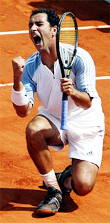
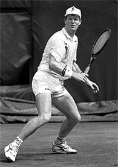
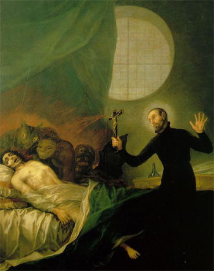

Previous: Secrets of Spanish Tennis - Paradigms and Superstructure | 🏠 Classic Lessons Home | Next: Service Shoulder Power
Secrets of spanish tennis suffering
Comprehensive unified tennis knowledge base — Fundamentals, Stroke Analysis, Reference Library, and more
Secrets of Spanish Tennis:Suffering
Chris Lewit
Nadal: a paragon of mental strength and the ability to suffer.
After visiting academy after academy, and interviewing coach after coach, I was astounded at how one after another stressed the same principle: suffering. Suffering to the Spanish means mental toughness, perseverance, and a fighting spirit. It is part of the tennis culture and every young Spanish player is expected to learn to fight and suffer on the red clay-to never give up.
Rafael Nadal demonstrates this mental strength perhaps better than any other professional player. Sometimes it seems Nadal likes to suffer!
But all Spanish professionals are taught to be fighters who never give up on the court. If a Spanish guy is your opponent, you may be bigger or stronger, but you know you are in for a dogfight and that the Spaniard will not tank or give in.
Whether in practice or in a match, the same willingness to suffer is demanded by Spanish coaches of their players. Said Albert Costa, "What I'm trying to do is make them think that everyday they have to do something else. If they go to the edge one day, the next day they have to go a bit farther. Every day they have to go farther."

Albert Costa: A player who knew how to go to the edge.
"When I was a player, I was a fighter. I know I had good quality tennis, but when I was practicing I was always going to the edge. Every day that you step up in the court, you have to do something else, or try to improve something."
Spanish players are taught to be fighters but also to be humble sportsmen. There is beauty in the toughness yet humility and integrity that typifies the Spanish mentality.
Jose Higueras, who was himself a true fighter on the court, believes that the willingness to suffer and fight is one of the key elements missing in American juniors. In fact, the USTA has been sending squads of elite American players over to Barcelona Total Tennis (a leading Spanish academy) to learn how to train, and more importantly, suffer the Spanish way.
Seriously?
When Spanish coaches said to me quite earnestly, "We teach the players how to suffer," I first wondered if they were serious. But the Spanish are very serious about training hard and setting up exercises to challenge a player's courage and fighting spirit.
Lluis Bruguera's philosophy is this: "If a player isn't willing to suffer, to sacrifice, it's impossible to win." When I asked him how he goes about achieving this with in his players at his Top Team Academy, he told me, "We force them."
The Spanish approach to drills: more, more, and more.
Bruguera suggested spending 4-5 hours daily with your players (pushing them physically and mentally). He recommended a lot of drills: "More, more, more. That's more difficult for the coach and player, but the result at the end is better."
The long, classic Spanish drills, with repetitions of 20-60 balls or more-nonstop-are one of the classic ways that Spanish coaches force players to learn discipline and to never give up. There is nothing like hitting your 30th ball-legs burning, lungs on fire, only to realize that you still have 30 more shots left to go in the exercise! That teaches suffering better than any other drill I know.
Although some coaches can make drills tough with just 5-10 balls, it is the suffering that comes from stamina drilling of 20 or more that creates the mental toughness the Spanish coaches are looking for.
In Spain, of course, running and conditioning are another important way of teaching players to learn how to suffer. Distance running and hill running are two ways to really simulate the pain and suffering that occurs in a five-set match at the French Open.
David Ferrer has shown that fast and fit can win.
Tennis Players Or Athletes?
Spanish players and coaches have figured out that the modern tennis game is a physical game where generally the strongest, fastest, fittest, and most powerful athlete wins. The Spanish understand that if they build superior athletes who are more agile, quicker, can run longer without getting tired, and stay injury free, they can develop those athletes into world-class tennis players.
In many other countries, including the United States, building tennis players seems to be the main focus-not building athletes. By building athletes first and tennis players second, Spain has figured out the formula for maximizing the performance of the talent pool they have in their tennis system.
In the 1980s, legendary Spanish coaches like Lluis Bruguera and Pato Alvarez anticipated the trend towards serious physical training for tennis at a time when most tennis players just played sets and practiced with very little in the way an of an off-court conditioning regimen. (Click Here to read a series of interviews with Luis. Click Here to learn more about Pato.)

Jim Courier: In the vanguard of serious conditioning, with a Spanish coach.
Players like Ivan Lendl and Jim Courier (who had a Spanish coach for many years, Jose Higueras) who were on the vanguard of the trend toward serious physical conditioning, taught the world about how important getting fit was to high performance on the tennis court, but the Spanish were well on their way towards recognizing this trend at about the same time, and they systematized this philosophy much earlier than other countries did.
When Sergi Bruguera burst on the scene in the early 1990's, he was known as being one of the fittest guys on the tour; he could run all day long like a deer without getting tired. This became the new Spanish paragon.
Pato and Lluis made serious off-court physical training an important component of their new training systems and the repercussions can still be seen today in the methodologies at modern Spanish academies.
50/50
Spanish academies are the only training centers I know that essentially split each training day almost 50/50 into fitness sessions and on-court tennis. It is not uncommon for players to log up to three hours of fitness and 2-3 hours of tennis during a heavy conditioning-periodized schedule or even more fitness during preseason training, which is usually 6-8 weeks in November or December.
Typically, Spanish academies only train 3-3.5 hours on the tennis court and 2-2.5 hours in the gym, running, working agility, stretching and performing injury prevention, etc.
50 percent of Spanish training is on court, like this drill to build racket speed.
From the youngest years, players are taught, through drills and physical conditioning-and through the matches they play on the slow, red clay-that a tennis match is a fight to the death, and that they must never give up, and always embrace suffering. Suffering then becomes a way of life for Spanish players, and they have this tremendous grit that they can tap into during long, arduous matches.
I wondered if suffering came from the Spanish culture itself. I asked many coaches how Spanish tennis became associated with suffering. Emilio Sanchez pointedly mentioned that the whole country suffered for decades under totalitarian rule, so maybe there is a connection there.
The theme of suffering is also a core part of the dominant Catholic religion in Spain. Most coaches pointed out that the clay courts teach a player that suffering is necessary to win. A friend referenced the artwork of the Spanish painter Goya, who depicted suffering as a constant theme in his work-perhaps there was some cultural connection, some historical underpinning to this masochistic philosophy?
I do not know the complete answer. But suffering is the simplest term to explain how Spanish players aspire to be the most mentally tough fighters in the tournament.

A Spanish cultural heritage: the redeeming value of suffering.
When I asked Pedro Rico, former coach of rising Spanish player Carlos Boluda, about Spanish players being more willing to suffer, he said, "No, they are not willing to suffer. They love to suffer."
"If they come out of the court with clay on their shoes, their socks, even if they fell-it's even better. They're happy."
Coaches, parents, and players can learn from the Spanish way of teaching players to suffer. Most importantly, understanding that stamina training, whether on court or off, has tremendous value, and should be used to develop mental toughness and concentration, not just for the more obvious physical benefits.
Endurance-type training has become out of style in recent years with trainers continuing to stress more short sprint work to mimic the ratio of rest/work in a typical tennis match. Trainers argue that too much endurance work may make players slower-actually developing more slow twitch fibers in the muscles.
But years of successful Spanish training has proven that this fear is overdone, and that long duration drilling and distance running are still a valuable means for training players, both for the physical and especially for the mental benefits.
Coaches, parents, and players can work to develop a strong values system, emphasizing the key psychological components of the Spanish method.
Key Components:
Suffering
Fighting Spirit
Pain tolerance
Respect for Others
Teamwork
Discipline
Perseverance
Concentration
Sportsmanship
Humility

Chris Lewit, former #1 for Cornell and Pro Circuit player, has coached numerous top 10 nationally ranked juniors and is a leading coach, educator, and author. He has written two best-selling books, The Secrets of Spanish Tennis and The Tennis Technique Bible.
Chris runs a popular high performance summer tennis camp in the beautiful mountains of Vermont and coaches players world-wide through his virtual school, CLTA Online (CLTA.teachable.com).
Chris also produces a weekly high performance tennis video talk show and podcast, The Prodigy Maker Show, which is available on Apple Podcasts and all other podcasting directories. All shows can be accessed at ProdigyMaker.com.
Check out Chris's blog, also at ProdigyMaker.com for free articles on high performance junior development and Spanish training. Learn about his camp at ChrisLewit.com or visit the online academy at CLTA.teachable.com

The Secrets of Spanish Tennis
What makes Spanish tennis so unique and successful? What exactly are those Spanish coaches doing so differently to develop superstars like Rafael Nadal and David Ferrer that other systems are not doing? These and other questions are answered in The Secrets of Spanish Tennis, the culmination of five years of study on the Spanish way of training by USTA High Performance Coach Chris Lewit.
Click Here to Order!
Source: tennisplayer.net archive — Secrets of Spanish Tennis-Suffering.docx (John Yandell teaching library, 2002-2022). Extracted and rendered as HTML for Tennis Future Lab.